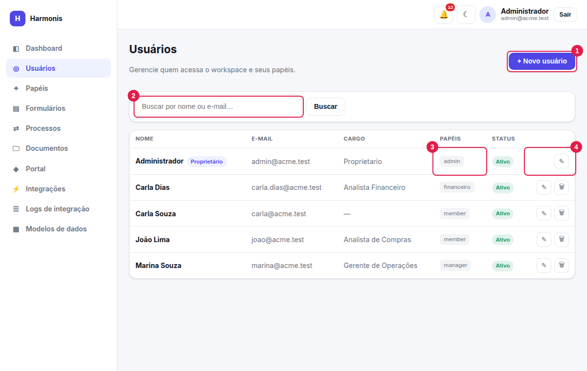
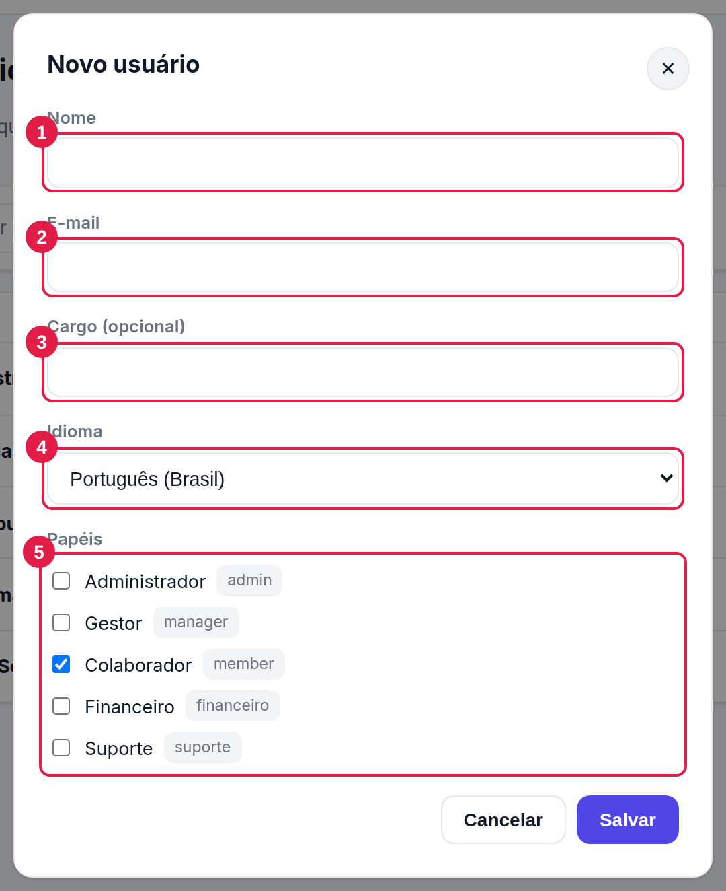
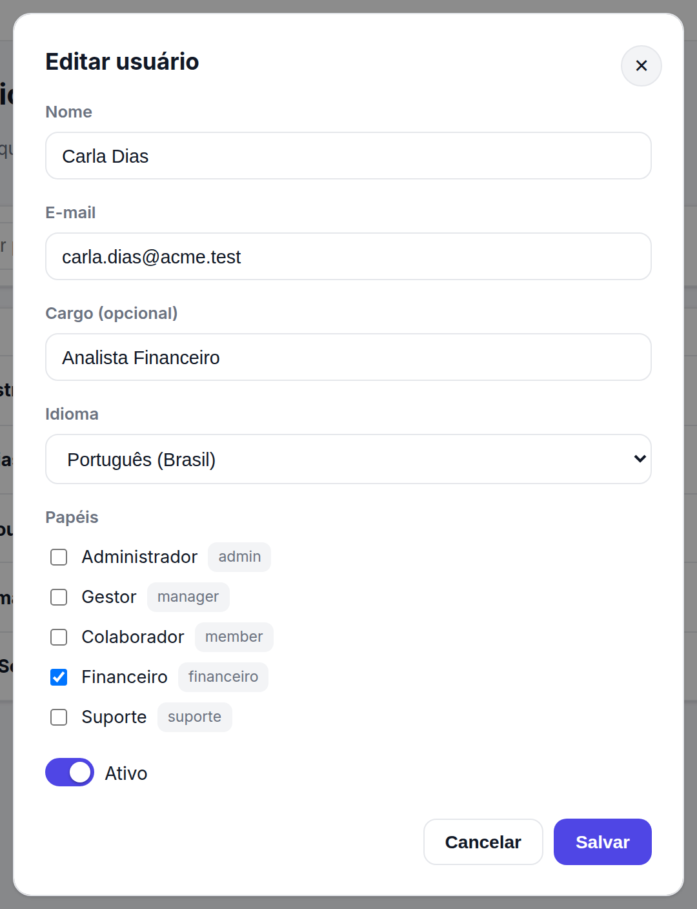
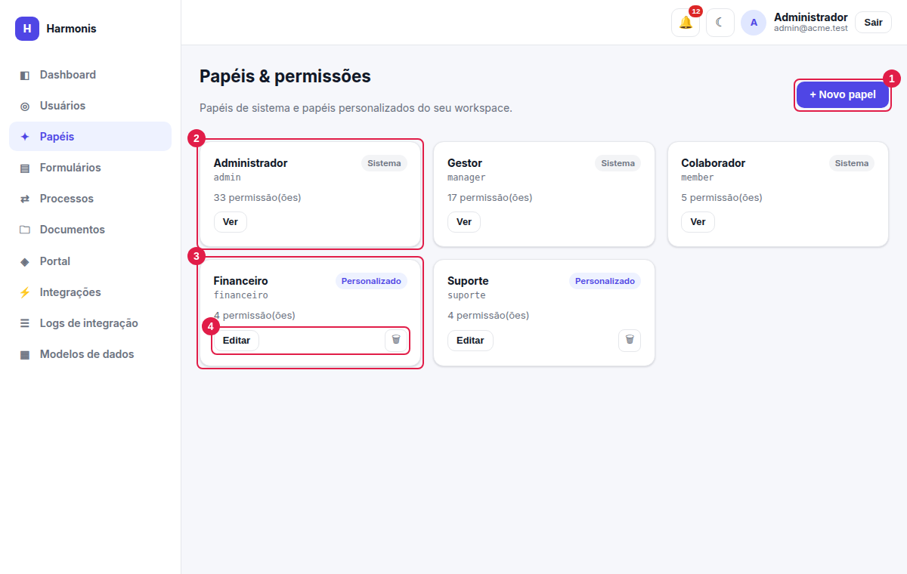
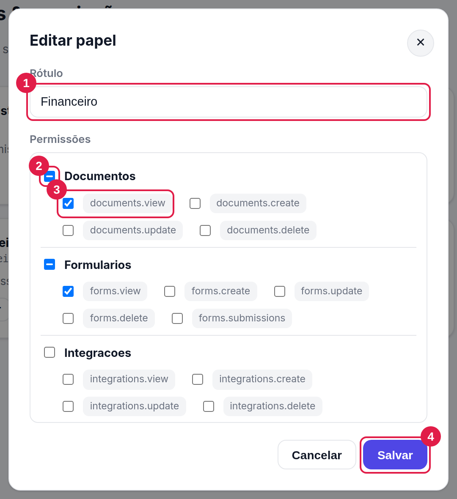

Usuários, papéis e permissões
Quem acessa o sistema, o que cada pessoa pode fazer e como montar papéis sob medida.
Ver usuários: users.view · criar: users.create · editar: users.update ·
remover: users.delete. Para papéis: roles.view, roles.create,
roles.update, roles.delete.
Usuários

- + Novo usuário — abre o cadastro (visível com
users.create). - Busca — procura por nome ou e-mail; tecle Enter ou clique em Buscar.
- Papéis — etiquetas com o identificador de cada papel do usuário.
- Ações — ✎ editar e 🗑 remover. O Proprietário não pode ser removido.
Colunas da tabela: Nome (com a etiqueta Proprietário quando for o caso), E-mail, Cargo, Papéis e Status (Ativo ou Inativo).
Cadastrar um usuário

- Nome — obrigatório. Aparece nas listas, notificações e na linha do tempo dos processos.
- E-mail — obrigatório, único na empresa e usado para entrar. Não pode ser alterado depois.
- Cargo (opcional) — texto livre exibido na lista.
- Idioma — idioma da interface dessa pessoa (Português, English ou Español). Ela mesma pode alterar em Meu perfil. Também define quais formulários ela vê (veja Idiomas do formulário).
- Papéis — marque um ou mais. As permissões somam-se. O identificador do papel aparece ao lado do nome.
Senha inicial
Ao salvar, o sistema gera uma senha inicial e a exibe uma única vez na janela (“Usuário criado! Senha inicial: …”). Anote e entregue à pessoa por um canal seguro — ela não será mostrada novamente.
Não há, nesta versão, tela para a pessoa trocar a própria senha nem envio automático por e-mail. Se a senha inicial se perder, acione a TI (veja Dúvidas).
Editar e desativar

| Campo | Regras |
|---|---|
| Nome, Cargo | Editáveis. |
| Somente leitura na edição. | |
| Papéis | Editáveis. Para o proprietário o campo é substituído por um aviso: ele mantém o papel de administrador. |
| Ativo / Inativo | Interruptor exibido só na edição. Usuário inativo não consegue entrar, mas seu histórico é preservado (aprovações já decididas, respostas enviadas). |
- O proprietário não pode ser desativado nem removido.
- Você não pode desativar nem remover a si mesmo.
- E-mails duplicados são recusados (“Já existe um usuário com este e-mail.”).
Em vez de remover alguém que saiu da empresa, desative: os registros históricos continuam consistentes e o acesso é bloqueado.
Papéis e permissões
Um papel agrupa permissões. Atribuir papéis a usuários é a única forma de conceder acesso (exceto o proprietário, que tem tudo). O mesmo papel também é usado no fluxo de aprovação (“aprovador por papel”) e em “Preenchido por”.

- + Novo papel — cria um papel personalizado (
roles.create). - Sistema — papéis nativos (Administrador, Gestor, Colaborador): só podem ser consultados (Ver).
- Personalizado — criados por você; podem ser editados e removidos.
- Ações do cartão — Ver/Editar abre a janela de permissões; 🗑 remove (apenas personalizados).
Criar ou editar um papel

- Rótulo — o nome amigável exibido nas telas (ex.: Financeiro).
- Caixa do grupo — marca/desmarca todas as permissões do grupo de uma vez; fica “indeterminada” (–) quando só parte está marcada.
- Permissões — cada uma representa uma ação (ex.:
forms.view). Marque apenas o necessário. - Salvar — grava o papel. Usuários com ele passam a ter as permissões no próximo login.
| Campo | Descrição e regras |
|---|---|
| Nome (identificador) | Só ao criar. Vira letras minúsculas, sem acentos, com espaços trocados por “_” e sem símbolos (ex.: “Suporte Nível 2” → suporte_nivel_2). Não pode repetir um papel existente nem usar o nome de um papel de sistema. |
| Rótulo | Texto exibido ao usuário. |
| Permissões | Lista agrupada por recurso. Veja a matriz completa. |
As permissões de uma pessoa são lidas ao entrar. Depois de mudar papéis ou permissões, peça que a pessoa saia e entre novamente.
“Papéis de sistema não podem ser editados” nem removidos. Se precisar de algo parecido, crie um papel personalizado com as permissões desejadas.
Exemplos de papéis personalizados
| Papel | Permissões sugeridas | Serve para |
|---|---|---|
| Financeiro | forms.view processes.view documents.view pages.view | Aprovar etapas e preencher campos complementares (“Preenchido por: Financeiro”). |
| Auditoria de integrações | integrations.logs | Consultar logs de webhooks sem ver credenciais. |
| Editor de portal | pages.view pages.create pages.update pages.delete | Equipe de comunicação. |
Quem decide uma etapa precisa apenas ter o papel indicado como aprovador (ou ser o usuário nomeado) e a permissão processes.view para ver a caixa de aprovações.